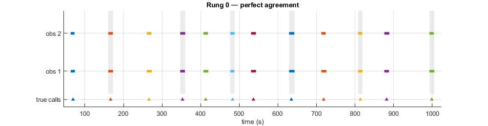
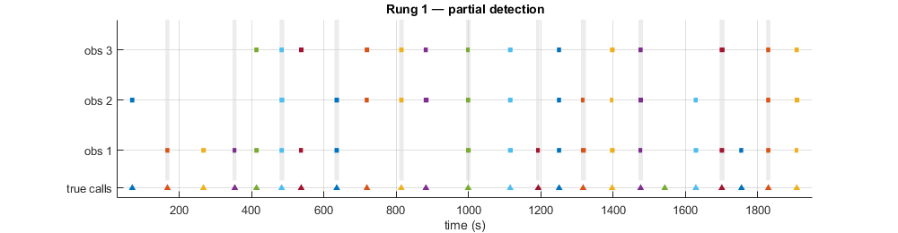
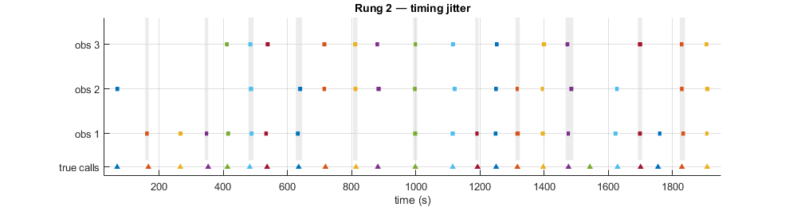
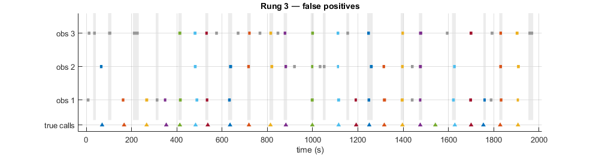
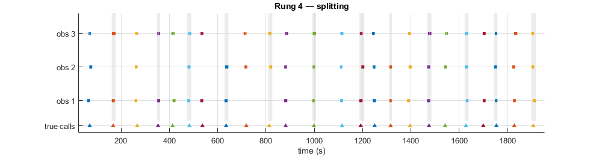
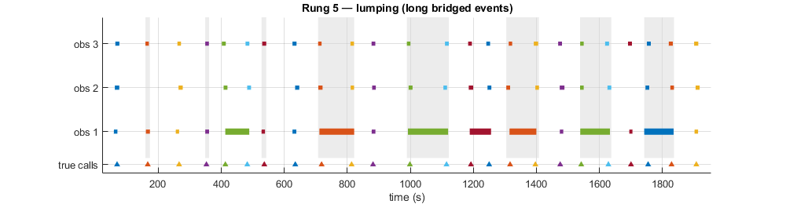
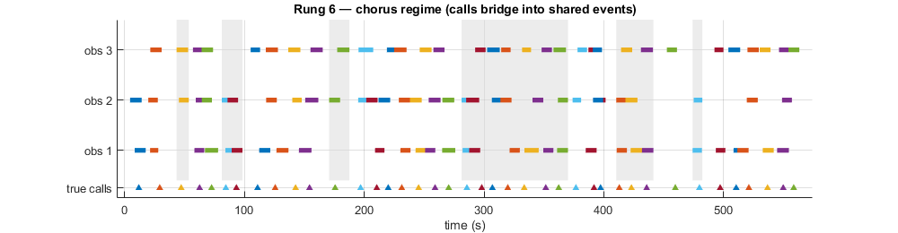
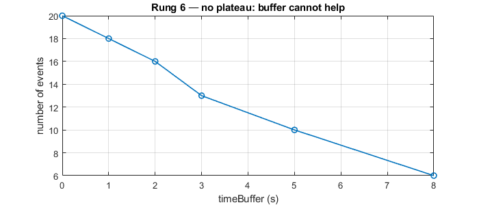

Contents
- Capture History Matching — Synthetic Gallery
- Background
- Reading the figures
- Setup
- Rung 0 — Perfect agreement
- Rung 1 — Partial detection
- Rung 2 — Timing jitter and order independence
- Rung 3 — False positives
- Rung 4 — Splitting
- Rung 5 — Lumping, and why it must be fixed upstream
- Rung 6 — Chorus regime, where event-equals-call breaks
- gallery complete
- TODO: References
- Local helpers
Capture History Matching — Synthetic Gallery
A laddered, illustrated introduction to multi-observer capture-history matching. Each rung adds one complication to a scenario whose answer is known in advance, so any disagreement is a fault in the matcher and not an opinion about real whales. The gallery is meant to be readable by someone meeting these ideas for the first time, so the first two sections give the background before any code runs.
To publish to HTML:
publish('gallery.m')
B. Miller, AAD, 2026
close all
Background
A capture history records, for one real event, which of several independent observers detected it. Here the event is an acoustic call and the observers are analysts and automated detectors. Each row is a call, each column is an observer, and each entry says whether that observer detected that call. The idea comes from mark-recapture and double-observer survey methods, where comparing who saw what lets you estimate how often things are missed and correct counts accordingly.
In passive acoustics this feeds two distinct jobs, and the distinction matters throughout the gallery:
1. Detection functions for call density estimation. How detection probability falls with range or signal-to-noise ratio, so a count of detections becomes a density of animals. This is the Common Ground protocol (Miller et al. 2026, Methods in Ecology and Evolution; the callDensity R package). 2. Detector characterisation. How a detector performs against analysts or other detectors, in the usual precision and recall terms.
Building a capture history requires matching: deciding when a detection from one observer is the same call as a detection from another. In continuous time, with imperfect boxes drawn around calls, this is the hard part. Four things go wrong, and each has its own rung below:
missed an observer did not detect a call that was there false positive a detection with no real call behind it splitting one observer draws several boxes over a single call lumping one observer draws a single box over several calls
Missed detections and false positives are unavoidable and are exactly what we want to measure. Splitting is a nuisance the matcher can undo, because the split boxes still point at one call. Lumping destroys information and cannot be undone after the fact, which is a theme the gallery returns to.
This gallery tests one matching algorithm: temporal single-linkage clustering. All detections from all observers are pooled and sorted in time, and a single forward pass groups them into events, opening a new event whenever a gap larger than timeBuffer appears. It is order independent and needs no pairwise joins. Its strengths and its one clear failure mode both appear below.
Reading the figures
Every rung draws a timeline. Time runs left to right in seconds. There is one row per observer.
coloured bar a detection, from its start to its end time. The colour identifies the true call it belongs to, so bars of the same colour are the same call seen by different observers. grey bar a false positive: a detection that belongs to no call. thicker bar a lumped box, one the generator drew over more than one call (appears in the lumping rung). shaded band a recovered event. Every bar inside one band was assigned to the same event by the matcher. Alternate events are shaded so neighbours stay distinct. bottom tick a true call centre, coloured to match its call. This is the ground truth the matcher never sees. A tick with no bars above it is a call every observer missed.
So the shaded bands are the matcher's answer, and the colours are the truth. When they agree, each band holds exactly one colour. A band holding two colours is a merge: two real calls collapsed into one event.
Setup
The matcher lives in the repo root, one level up from this examples folder, so we add that to the path relative to this file. The matcher is a handle, so a second algorithm (a gridded matcher, say) can be dropped in later by changing this one line, mirroring the bsnr pattern of one interface with several algorithms behind it.
here = fileparts(mfilename('fullpath')); addpath(fullfile(here, '..'), '-begin'); timeBuffer = 3; % seconds. Detections separated by more than this open a % new event. In the real pipeline this is in days. matcher = @(tabs) matchbox(tabs{:}, 'method','clustered', ... 'timeBuffer', timeBuffer, 'splitRule', 'overlap', 'verbose', false); fprintf('Buffer = %g s | splitRule = overlap\n', timeBuffer);
Buffer = 3 s | splitRule = overlap
Rung 0 — Perfect agreement
The plumbing test. Two observers detect every call at the same time. There is nothing to disagree about, so the matcher should return one event per call with both observers present. If this fails, nothing below is meaningful.
p = defaults('zcall'); p.nCalls = 12; p.nObs = 2; p.pDetect = ones(p.nCalls, p.nObs); % everyone detects everything [tables, truth] = genScenario(p); ch = matcher(tables); res = checkScenario(ch, truth); reportRung('0 perfect agreement', res); plotScenario(tables, ch, truth, 'Rung 0 — perfect agreement');

Rung 1 — Partial detection
Real observers miss calls. Here three observers each detect a random 70% of calls, independently. The recovered detection matrix must reproduce the pattern of hits and misses exactly. This is the capture history doing its actual job.
Watch for a call that every observer missed. With three observers at 70% each, a call is missed by all three about 3% of the time, so across two dozen calls you usually get one. It has an all-zero capture history, so it cannot be a row in the table and shows only as a bottom tick with no bars above it. This is not a failure. It is the reason capture-recapture is worth the trouble: the frequencies of calls seen by one, two, and three observers let you estimate how many were seen by none, which is the number you most want and can never count directly. The printout shows those frequencies, and the missed-by-all count beside them.
p = defaults('zcall'); p.nCalls = 24; p.nObs = 3; p.pDetect = 0.7; [tables, truth] = genScenario(p); ch = matcher(tables); res = checkScenario(ch, truth); reportRung('1 partial detection', res); plotScenario(tables, ch, truth, 'Rung 1 — partial detection');
Rung 1 partial detection [PASS] 24 true calls: 23 detected by one or more observers, 1 missed by all. recovered as 23 events. Capture frequency 1 obs: 6 2 obs: 9 3 obs: 8

Rung 2 — Timing jitter and order independence
Observers rarely agree on a call's start to the second. Here their boxes are offset by a few seconds. For well-separated calls this must change nothing, because boxes of the same call still overlap. We also shuffle the order the tables are passed in and confirm the event structure is identical. That is the synthetic version of the 123-versus-321 test on the real Casey data, where the old pairwise matcher gave different answers depending on observer order and this one does not.
p = defaults('zcall'); p.nCalls = 24; p.nObs = 3; p.pDetect = 0.7; p.timeJitter = 3; % seconds of start-time disagreement [tables, truth] = genScenario(p); ch = matcher(tables); res = checkScenario(ch, truth); reportRung('2 timing jitter', res); % Order independence: match the same tables in a shuffled order and compare % the event structure, using the true-call content of each event (which does % not depend on which column an observer landed in). ord = randperm(truth.nObs); ev1 = computeEventIds(ch, truth.nObs); ev2 = computeEventIds(matcher(tables(ord)), truth.nObs); same = ev1.nEvents == ev2.nEvents && isequal(ev1.sortedIds, ev2.sortedIds); fprintf(' order-independent: %s\n', tf(same, 'yes', 'NO')); plotScenario(tables, ch, truth, 'Rung 2 — timing jitter');
Rung 2 timing jitter [PASS] 24 true calls: 23 detected by one or more observers, 1 missed by all. recovered as 23 events. Capture frequency 1 obs: 6 2 obs: 9 3 obs: 8 order-independent: yes

Rung 3 — False positives
This is the case that dominates automated detection. Low-precision detectors report many spurious detections, because there are many low-SNR calls to be fooled by. Observer 3 here is such a detector. Its false positives must form their own events and must never attach themselves to a real call.
p = defaults('zcall'); p.nCalls = 24; p.nObs = 3; p.pDetect = 0.7; p.timeJitter = 3; p.nFP = [4 4 18]; % observer 3 is low precision [tables, truth] = genScenario(p); ch = matcher(tables); res = checkScenario(ch, truth); reportRung('3 false positives', res); plotScenario(tables, ch, truth, 'Rung 3 — false positives');
Rung 3 false positives [PASS] 24 true calls: 23 detected by one or more observers, 1 missed by all. recovered as 40 events. Capture frequency 1 obs: 6 2 obs: 9 3 obs: 8 false-positive events: 17 merged events: 0

Rung 4 — Splitting
Observer 3 now sometimes reports one call as two shorter boxes. Because both boxes still overlap the same call, the matcher's same-observer collapse folds them back to one row per event, and the event count and detection matrix are unchanged. Splitting is a nuisance, not a loss: nothing about the truth was destroyed.
p = defaults('zcall'); p.nCalls = 24; p.nObs = 3; p.pDetect = 0.85; p.timeJitter = 3; p.pSplit = [0 0 0.5]; % observer 3 is the splitter [tables, truth] = genScenario(p); ch = matcher(tables); res = checkScenario(ch, truth); reportRung('4 splitting', res); fprintf(' splits generated: %d | events still equal detected calls: %s\n', ... truth.nSplits, tf(res.nCallsRecovered == res.nCallsExpected, 'yes', 'NO')); plotScenario(tables, ch, truth, 'Rung 4 — splitting');
Rung 4 splitting [PASS] 24 true calls: 24 detected by one or more observers, 0 missed by all. recovered as 24 events. Capture frequency 1 obs: 0 2 obs: 10 3 obs: 14 splits generated: 12 | events still equal detected calls: yes

Rung 5 — Lumping, and why it must be fixed upstream
Observer 1 now sometimes draws one box over two adjacent calls. This is the pathology we found in analyst a2 at Casey 2019. Unlike splitting it cannot be undone, because the fact that the box held two calls was never recorded. Lumping carries two costs, one for each application from the Background:
1. Detector characterisation. The lumped box bridges two calls into one long event. The dependable signature is event duration, exactly as on the real data where the lump events formed a tail past 40 s. We detect every lump this way. 2. Co-observer corruption. Because the lump bridges the two calls into a single event, the separate detections that the other observers made of those two calls now sit in the same event and collapse to one row each. Their capture histories are quietly damaged. That lost-detection count is the real price of a missing "one box per call" instruction.
The nCalls annotation the generator puts on the lumped box supports the density correction (a true positive worth two calls) for that observer, but it cannot restore what the co-observers lost. The fix belongs in the annotation protocol, not in the matcher.
p = defaults('zcall'); p.nCalls = 24; p.nObs = 3; p.pDetect = [1 0.9 0.9]; % obs2/obs3 see calls individually p.timeJitter = 3; p.pLump = [0.3 0 0]; % only observer 1 lumps, like analyst a2 [tables, truth] = genScenario(p); ch = matcher(tables); % Cost 1: detect lumps by duration, the same diagnostic used on real data. durS = ch.tEnd - ch.t0; % event durations, seconds longThresh = p.callDur + 6*p.timeJitter + 5; % longer than any single call's envelope nLong = sum(durS > longThresh); % Cost 2: how many real detections were swallowed by collapse. Every real % detection generated, minus every real detection surviving in the table, % is the number lost. With no splitting in this rung the loss is all lumping. nPooledReal = sum(cellfun(@(t) sum(t.trueCall > 0), tables)); detCols = ch.Properties.VariableNames(startsWith(ch.Properties.VariableNames,'detect_observer')); nDetectCells = sum(sum(ch{:, detCols} == 1)); collapseLoss = nPooledReal - nDetectCells; fprintf('\nRung 5 lumping [demonstration]\n'); fprintf(' lumps generated: %d | long events (>%.0f s): %d -> duration catches every lump: %s\n', ... truth.nLumps, longThresh, nLong, tf(nLong == truth.nLumps, 'yes', 'NO')); fprintf(' co-observer detections swallowed by lump-bridged events: %d\n', collapseLoss); plotScenario(tables, ch, truth, 'Rung 5 — lumping (long bridged events)');
Rung 5 lumping [demonstration] lumps generated: 7 | long events (>35 s): 7 -> duration catches every lump: yes co-observer detections swallowed by lump-bridged events: 14

Rung 6 — Chorus regime, where event-equals-call breaks
Everything so far assumed calls far enough apart to tell one from the next. Now the calls are close-spaced, a chorus of several animals rather than one caller. There is no lumping and no splitting: every box is honest. But distinct calls sit within a jitter-width of each other, so the boxes of neighbouring calls overlap, and single-linkage bridges genuinely separate calls into shared events even at a zero buffer. Widening the buffer only makes it worse, so a buffer sweep never settles. This is the fin-pulse regime, and it is the boundary of the clustering approach. The honest fix here is a gridded matcher, not a buffer value.
p = defaults('chorus'); p.nCalls = 40; p.nObs = 3; p.pDetect = 0.8; [tables, truth] = genScenario(p); ch = matcher(tables); ev = computeEventIds(ch, truth.nObs); % A buffer sweep, the miniature of the real Casey sweep: a healthy regime % plateaus, this one keeps falling. bufSecs = [0 1 2 3 5 8]; nEv = arrayfun(@(b) height(matchbox(tables{:}, 'method','clustered', ... 'timeBuffer', b, 'splitRule', 'overlap', 'verbose', false)), bufSecs); % Timeline: close-spaced calls bridging into shared events. plotScenario(tables, ch, truth, 'Rung 6 — chorus regime (calls bridge into shared events)'); snapnow; % Buffer sweep: a healthy regime plateaus, this one keeps falling. figure('Units','pixels','Position',[50 50 700 300]); plot(bufSecs, nEv, '-o', 'LineWidth', 1.2); grid on xlabel('timeBuffer (s)'); ylabel('number of events'); title('Rung 6 — no plateau: buffer cannot help', 'FontWeight','bold'); fprintf('\nRung 6 chorus [demonstration]\n'); fprintf(' true calls detected: %d | events at buffer 0: %d | merged events: %d (%.0f%%)\n', ... numel(truth.detectedCalls), ev.nEvents, sum(ev.merged), 100*mean(ev.merged)); fprintf(' buffer sweep (s): '); fprintf('%6g', bufSecs); fprintf('\n'); fprintf(' events: '); fprintf('%6g', nEv); fprintf('\n'); snapnow;

Rung 6 chorus [demonstration] true calls detected: 40 | events at buffer 0: 13 | merged events: 6 (46%) buffer sweep (s): 0 1 2 3 5 8 events: 20 18 16 13 10 6

gallery complete
The end
disp('\n=== gallery complete ===\n');
\n=== gallery complete ===\n
TODO: References
Local helpers
function p = defaults(regime) % DEFAULTS Parameter set for a scenario regime. % Returns a struct of knobs that genScenario understands. Two regimes are % provided: 'zcall' (one caller, calls far apart, the easy case) and % 'chorus' (several animals, calls close together, the hard case). Rungs % start from one of these and then flip individual knobs. if nargin < 1, regime = 'zcall'; end % Knobs shared by both regimes (rungs override these as needed). p.nObs = 2; % number of observers p.pDetect = 1; % detection prob: scalar, 1-by-nObs, or nCalls-by-nObs logical p.timeJitter = 0; % s, sd of per-detection start-time offset between observers p.durJitter = 1; % s, sd of box duration p.nFP = 0; % false positives: scalar or 1-by-nObs count p.pSplit = 0; % prob an observer splits a call into two boxes p.pLump = 0; % prob an observer lumps a call with the next into one box p.band = [26 28];% Hz, frequency band of the boxes (single call type) p.minGap = []; % [] = auto separable spacing; a number allows tight spacing p.seed = 42; % rng seed, for reproducible scenarios % Regime-specific timing. switch regime case 'zcall' % single caller, well separated: clustering is trivial p.nCalls = 24; p.callDur = 12; p.gapMean = 80; p.gapJitter = 20; case 'chorus' % several animals, close spaced: clustering degrades p.nCalls = 40; p.callDur = 9; p.gapMean = 14; p.gapJitter = 4; p.timeJitter = 3; p.minGap = 4; otherwise error('Unknown regime: %s', regime); end end % ------------------------------------------------------------------------- function [tables, truth] = genScenario(p) % GENSCENARIO Build observer detection tables with known ground truth. % Lays down p.nCalls true calls along a timeline, decides which observer % detected which call, then turns each detected call into one or more % boxes with the requested jitter, splitting, lumping, and false % positives. Every box carries two hidden truth columns: % trueCall the call it belongs to (0 for a false positive) % nCalls how many true calls the box actually covers (2 if lumped) % These ride through the matcher so the checker can grade the result. rng(p.seed); % True call centre times. Draw gaps, but keep them at least minGap apart so % that (in the separable regime) neighbouring calls do not overlap. In the % chorus regime minGap is small on purpose so they can. if isempty(p.minGap), minGap = p.callDur + 4*p.timeJitter + 5; else, minGap = p.minGap; end gaps = max(p.gapMean + p.gapJitter*randn(p.nCalls,1), minGap); tCentre = cumsum(gaps); % Detection design matrix D (nCalls-by-nObs): who detected what. Accept a % ready-made logical matrix, a per-observer probability vector, or a single % probability applied to all observers. pd = p.pDetect; if ~isscalar(pd) && isequal(size(pd), [p.nCalls p.nObs]) D = logical(pd); else if isscalar(pd), pd = repmat(pd, 1, p.nObs); end D = rand(p.nCalls, p.nObs) < pd; end % Expand scalar behaviour rates to one value per observer. pSplit = p.pSplit; if isscalar(pSplit), pSplit = repmat(pSplit, 1, p.nObs); end pLump = p.pLump; if isscalar(pLump), pLump = repmat(pLump, 1, p.nObs); end nFP = p.nFP; if isscalar(nFP), nFP = repmat(nFP, 1, p.nObs); end span = [min(tCentre) - p.gapMean, max(tCentre) + p.gapMean]; % where FPs may land truth.nSplits = 0; truth.nLumps = 0; tables = cell(1, p.nObs); for o = 1:p.nObs % Column accumulators for this observer's boxes. t0=[]; tEnd=[]; fLow=[]; fHigh=[]; snr=[]; trueCall=[]; nCalls=[]; % Walk the calls in order. Lumping consumes the next call too, so we % advance the index by hand rather than with a for loop. k = 1; while k <= p.nCalls if ~D(k,o), k = k + 1; continue; end % this observer missed call k % Lump: one box spanning call k and call k+1, if the observer also % detected k+1. Records nCalls = 2, the information a downstream % density correction would need and a bare box would lose. doLump = rand < pLump(o) && k < p.nCalls && D(k+1,o); if doLump start = tCentre(k) - p.callDur/2 + p.timeJitter*randn; stop = tCentre(k+1) + p.callDur/2 + p.timeJitter*randn; [t0,tEnd,fLow,fHigh,snr,trueCall,nCalls] = ... emit(t0,tEnd,fLow,fHigh,snr,trueCall,nCalls, ... start, stop, p.band, 5+5*randn, k, 2); truth.nLumps = truth.nLumps + 1; k = k + 2; continue end % Otherwise one call, optionally split into two shorter boxes that % both point at the same call (trueCall = k on each). start = tCentre(k) - p.callDur/2 + p.timeJitter*randn; dur = max(p.callDur + p.durJitter*randn, 0.5); if rand < pSplit(o) mid = start + dur/2; g = 0.5; % small gap between the two halves [t0,tEnd,fLow,fHigh,snr,trueCall,nCalls] = ... emit(t0,tEnd,fLow,fHigh,snr,trueCall,nCalls, ... start, mid-g, p.band, 5+5*randn, k, 1); [t0,tEnd,fLow,fHigh,snr,trueCall,nCalls] = ... emit(t0,tEnd,fLow,fHigh,snr,trueCall,nCalls, ... mid+g, start+dur, p.band, 5+5*randn, k, 1); truth.nSplits = truth.nSplits + 1; else [t0,tEnd,fLow,fHigh,snr,trueCall,nCalls] = ... emit(t0,tEnd,fLow,fHigh,snr,trueCall,nCalls, ... start, start+dur, p.band, 5+5*randn, k, 1); end k = k + 1; end % False positives, placed clear of every true call so they cannot be % confused with one. Lower SNR, as real false positives tend to be. for j = 1:nFP(o) c = pickClearTime(span, tCentre, p.callDur + 5*p.timeJitter + 5); [t0,tEnd,fLow,fHigh,snr,trueCall,nCalls] = ... emit(t0,tEnd,fLow,fHigh,snr,trueCall,nCalls, ... c - p.callDur/2, c + p.callDur/2, p.band, -2+4*randn, 0, 1); end tables{o} = table(t0, tEnd, fLow, fHigh, snr, trueCall, nCalls); end truth.D = D; % who detected what (nCalls-by-nObs) truth.tCentre = tCentre; truth.nCalls = p.nCalls; truth.nObs = p.nObs; truth.detectedCalls = find(any(D, 2)); % calls seen by at least one observer end % ------------------------------------------------------------------------- function [t0,tEnd,fLow,fHigh,snr,trueCall,nCalls] = ... emit(t0,tEnd,fLow,fHigh,snr,trueCall,nCalls, s, e, band, snrVal, tc, nc) % EMIT Append one detection box to this observer's growing columns. % Keeps genScenario readable by hiding the repeated bookkeeping. tc is the % true-call id (0 = false positive); nc is the number of true calls the box % covers (2 = lumped). t0(end+1,1) = s; %#ok<*AGROW> tEnd(end+1,1) = e; fLow(end+1,1) = band(1); fHigh(end+1,1) = band(2); snr(end+1,1) = snrVal; trueCall(end+1,1) = tc; nCalls(end+1,1) = nc; end % ------------------------------------------------------------------------- function c = pickClearTime(span, tCentre, minSep) % PICKCLEARTIME A random time at least minSep from every true call centre. % Ensures false positives land in genuine gaps, so a false positive is % never accidentally the same event as a real call. for tries = 1:1000 c = span(1) + rand*(span(2) - span(1)); if all(abs(c - tCentre) > minSep), return; end end error('Could not place a false positive clear of true calls; widen span.'); end % ------------------------------------------------------------------------- function ev = computeEventIds(ch, nObs) % COMPUTEEVENTIDS Decode each recovered event's true-call content. % For every event, gather the trueCall id each observer contributed (via % the trueCall_observerK columns the matcher carried through). The set of % positive ids tells us what the event really is: % empty / all zero -> a false-positive event % one positive id -> a clean event (one real call) % several ids -> a merge (two real calls in one event) % This is deliberately independent of observer labelling, so it survives % shuffling the input order. n = height(ch); V = nan(n, nObs); for o = 1:nObs col = sprintf('trueCall_observer%d', o); if ismember(col, ch.Properties.VariableNames), V(:,o) = ch.(col); end end realId = nan(n,1); merged = false(n,1); isFP = false(n,1); for e = 1:n ids = V(e,:); ids = ids(~isnan(ids)); pos = unique(ids(ids > 0)); if isempty(pos), isFP(e) = true; % nothing positive -> FP else, realId(e) = pos(1); merged(e) = numel(pos) > 1; % >1 id -> merge end end ev.nEvents = n; ev.realId = realId; % the call id each event maps to (NaN if FP) ev.merged = merged; % true where an event conflates >1 call ev.isFP = isFP; ev.sortedIds = sort(realId(~isnan(realId))); % label-independent signature end % ------------------------------------------------------------------------- function res = checkScenario(ch, truth) % CHECKSCENARIO Grade a recovered capture history against known truth. % Rebuilds the detection matrix from the recovered events and compares it % to truth.D. Merged events are left out of that reconstruction, because a % merged event conflates two calls and its detections cannot be attributed % to one of them; they are counted on their own as nMerged instead. A rung % passes when the matrix matches, no events are merged, and every detected % call was recovered as its own event. ev = computeEventIds(ch, truth.nObs); Drec = false(truth.nCalls, truth.nObs); for e = 1:ev.nEvents if isnan(ev.realId(e)) || ev.merged(e), continue; end % skip FP and merged k = ev.realId(e); for o = 1:truth.nObs Drec(k,o) = logical(ch.(sprintf('detect_observer%d', o))(e)); end end det = truth.detectedCalls; % compare only on calls someone saw res.nEvents = ev.nEvents; res.nMerged = sum(ev.merged); res.nFPevents = sum(ev.isFP); res.matrixMatch = isequal(Drec(det,:), truth.D(det,:)); res.nCallsRecovered = numel(unique(ev.realId(~isnan(ev.realId) & ~ev.merged))); res.nCallsExpected = numel(det); res.nCallsTrue = truth.nCalls; % all true calls, detected or not res.nUnobserved = truth.nCalls - numel(det); % calls no observer detected % Capture frequency: of the clean recovered events, how many were seen by % exactly j observers. This is the observed part of the capture-recapture % data; the j = 0 class (missed by all) is nUnobserved above and is what the % analysis estimates rather than observes. detCols = arrayfun(@(o) sprintf('detect_observer%d', o), 1:truth.nObs, 'uni', 0); realEvents = ~isnan(ev.realId) & ~ev.merged; nSeen = sum(ch{realEvents, detCols} == 1, 2); res.captureFreq = accumarray(nSeen, 1, [truth.nObs 1])'; % counts for j = 1..nObs res.pass = res.matrixMatch && res.nMerged == 0 && ... res.nCallsRecovered == res.nCallsExpected; end % ------------------------------------------------------------------------- function reportRung(name, res) % REPORTRUNG Narrated summary for an assertion rung. The [PASS] tag is the % quiet validation; the sentences are the illustrative part. disp(sprintf('\nRung %s [%s]\n', name, tf(res.pass, 'PASS', 'FAIL'))); disp(sprintf(' %d true calls: %d detected by one or more observers, %d missed by all.\n', ... res.nCallsTrue, res.nCallsExpected, res.nUnobserved)); freqStr = strjoin(arrayfun(@(j) sprintf('%d obs: %d', j, res.captureFreq(j)), ... 1:numel(res.captureFreq), 'uni', 0), ' '); disp(sprintf(' recovered as %d events. Capture frequency %s\n', res.nEvents, freqStr)); if res.nFPevents > 0 || res.nMerged > 0 disp(sprintf(' false-positive events: %d merged events: %d\n', ... res.nFPevents, res.nMerged)); end end % ------------------------------------------------------------------------- function plotScenario(tables, ch, truth, titleStr) % PLOTSCENARIO Draw a labelled timeline for a rung (all events by default). figure('Units','pixels','Position',[50 50 1000 260]); plotScenarioAxes(gca, tables, ch, truth, Inf); title(titleStr, 'Interpreter','none', 'FontWeight','bold'); end % ------------------------------------------------------------------------- function plotScenarioAxes(ax, tables, ch, truth, maxEvents) % PLOTSCENARIOAXES Timeline of detections and recovered events. % One row per observer. Each detection is a horizontal bar from start to % end, coloured by the true call it belongs to (grey = false positive), and % drawn thicker if it is a lumped box. The alternating grey bands are the % recovered events: every bar inside a band was grouped into one event by % the matcher. Along the bottom, a coloured tick marks each true call % centre (the ground truth the matcher never sees); a tick with no bars % above it is a call every observer missed. Pass maxEvents to zoom to the % first N events; Inf shows all. if nargin < 5 || isempty(maxEvents), maxEvents = Inf; end hold(ax, 'on'); nObs = truth.nObs; cmap = lines(max(truth.nCalls, 7)); % a distinct colour per true call % Decide the time window from the first maxEvents recovered events. [~, ord] = sort(ch.t0); chS = ch(ord, :); nShow = min(maxEvents, height(chS)); pad = 0.02 * (chS.tEnd(nShow) - chS.t0(1)); xlo = chS.t0(1) - pad; xhi = chS.tEnd(nShow) + pad; % Shaded bands = recovered events. Shade alternate events so that two % events sitting side by side are still visually separable. for e = 1:nShow if mod(e,2) == 0 patch(ax, [chS.t0(e) chS.tEnd(e) chS.tEnd(e) chS.t0(e)], ... [0.4 0.4 nObs+0.6 nObs+0.6], [0.85 0.85 0.85], ... 'EdgeColor','none', 'FaceAlpha', 0.5); end end % Detection bars, coloured by true call, one row per observer. for o = 1:nObs d = tables{o}; for r = 1:height(d) if d.t0(r) > xhi || d.tEnd(r) < xlo, continue; end % outside window if d.trueCall(r) > 0 col = cmap(mod(d.trueCall(r)-1, size(cmap,1)) + 1, :); else col = [0.6 0.6 0.6]; % false positive end lw = 4 + 2*(d.nCalls(r) > 1); % thicker bar marks a lumped box line(ax, [d.t0(r) d.tEnd(r)], [o o], 'Color', col, 'LineWidth', lw); end end % Ground-truth call centres, the truth the matcher never sees. Each true % call gets a tick in its own colour, so a tick with no bars of that colour % above it is a call every observer missed. That call has an all-zero % capture history and cannot appear as an event; it is exactly the class a % capture-recapture analysis exists to estimate. for k = 1:truth.nCalls xc = truth.tCentre(k); if xc < xlo || xc > xhi, continue; end col = cmap(mod(k-1, size(cmap,1)) + 1, :); plot(ax, xc, 0.25, '^', 'MarkerSize', 5, ... 'MarkerFaceColor', col, 'MarkerEdgeColor', 'none'); end hold(ax, 'off'); xlim(ax, [xlo xhi]); ylim(ax, [0.05 nObs+0.6]); ylabels = [{'true calls'}, arrayfun(@(o) sprintf('obs %d', o), 1:nObs, 'uni', 0)]; set(ax, 'YTick', [0.25, 1:nObs], 'YTickLabel', ylabels); xlabel(ax, 'time (s)'); grid(ax, 'on'); end % ------------------------------------------------------------------------- function s = tf(cond, yes, no) % TF Tiny ternary for tidy status strings. if cond, s = yes; else, s = no; end end
Rung 0 perfect agreement [PASS] 12 true calls: 12 detected by one or more observers, 0 missed by all. recovered as 12 events. Capture frequency 1 obs: 0 2 obs: 12